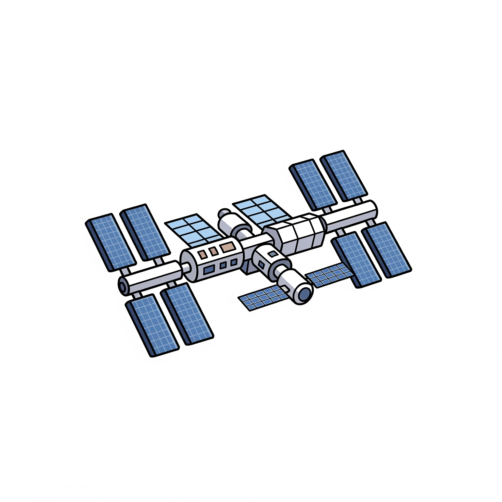

Relativitäts Theorie

Der Hafele-Keating-Flugzeugtest
Der Hafele-Keating-Flugzeugtest im Jahr 1971 bewies direkt die Zeitdilatation: Atomuhren an Bord von Flugzeugen gingen im Vergleich zu Bodenuhren, je nach Flugrichtung und Geschwindigkeit, messbar langsamer oder schneller. Diese winzigen Zeitunterschiede stimmten perfekt mit Einsteins Vorhersagen überein und zeigten, dass Zeit relativ zur Bewegung vergeht.

Global Posirioning System (GPS)
GPS-Satelliten bewegen sich so schnell und befinden sich in einem so geringen Gravitationsfeld, dass ihre Uhren für Beobachter auf der Erde um etwa 38 Mikrosekunden pro Tag vorlaufen würden. Ohne die Berücksichtigung dieser Effekte durch die Allgemeine und Spezielle Relativitätstheorie käme es bei der Positionsbestimmung zu Fehlern von Kilometern pro Tag. Die kontinuierliche Korrektur dieser relativistischen Effekte in GPS-Systemen ist somit ein täglicher und unverzichtbarer Beweis für Einsteins Theorien.